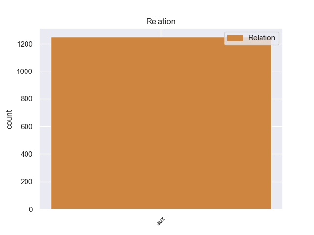
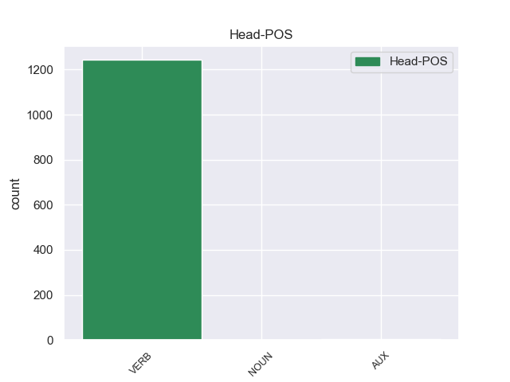
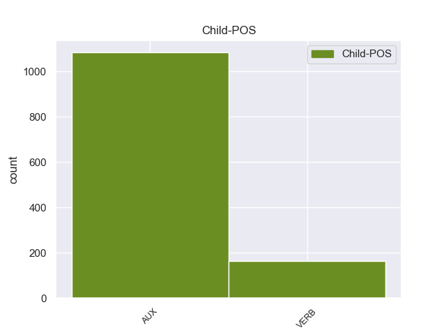

Distribution of features within this leaf



Agreement Rules sorted by frequency.
- When the dependent token is the auxiliary(aux) of the head token, and the dependent token is AUX.
1 " _ _ _ _ 0 _ _ _
2 Tenemos _ _ _ _ 0 _ _ _
3 todo _ _ _ _ 0 _ _ _
4 listo _ _ _ _ 0 _ _ _
5 , _ _ _ _ 0 _ _ _
6 la _ _ _ _ 0 _ _ _
7 venta _ _ _ _ 0 _ _ _
8 de _ _ _ _ 0 _ _ _
9 boletos _ _ _ _ 0 _ _ _
10 será _ _ _ _ 0 _ _ _
11 a _ _ _ _ 0 _ _ _
12 partir _ _ _ _ 0 _ _ _
13 de _ _ _ _ 0 _ _ _
14 mañana _ _ _ _ 0 _ _ _
15 de _ _ _ _ 0 _ _ _
16 8 _ _ _ _ 0 _ _ _
17 am _ _ _ _ 0 _ _ _
18 a _ _ _ _ 0 _ _ _
19 3 _ _ _ _ 0 _ _ _
20 pm _ _ _ _ 0 _ _ _
21 , _ _ _ _ 0 _ _ _
22 la _ _ _ _ 0 _ _ _
23 afición _ _ _ _ 0 _ _ _
24 de _ _ _ _ 0 _ _ _
25 el _ _ _ _ 0 _ _ _
26 Real _ _ _ _ 0 _ _ _
27 España _ _ _ _ 0 _ _ _
28 podrá _ _ _ _ 0 _ _ _
29 comprar _ _ _ _ 0 _ _ _
30 en _ _ _ _ 0 _ _ _
31 el _ _ _ _ 0 _ _ _
32 Banco _ _ _ _ 0 _ _ _
33 Continental _ _ _ _ 0 _ _ _
34 , _ _ _ _ 0 _ _ _
35 frente _ _ _ _ 0 _ _ _
36 a _ _ _ _ 0 _ _ _
37 el _ _ _ _ 0 _ _ _
38 estadio _ _ _ _ 0 _ _ _
39 Morazán _ _ _ _ 0 _ _ _
40 , _ _ _ _ 0 _ _ _
41 se _ _ _ _ 0 _ _ _
42 han _ _ _ _ 0 _ _ _
43 puesto _ _ _ _ 0 _ _ _
44 a _ _ _ _ 0 _ _ _
45 la _ _ _ _ 0 _ _ _
46 venta _ _ _ _ 0 _ _ _
47 800 _ _ _ _ 0 _ _ _
48 boletos _ _ _ _ 0 _ _ _
49 , _ _ _ _ 0 _ _ _
50 500 _ _ _ _ 0 _ _ _
51 en _ _ _ _ 0 _ _ _
52 sol _ _ _ _ 0 _ _ _
53 y _ _ _ _ 0 _ _ _
54 300 _ _ _ _ 0 _ _ _
55 en _ _ _ _ 0 _ _ _
56 preferencia _ _ _ _ 0 _ _ _
57 , _ _ _ _ 0 _ _ _
58 la _ _ _ _ 0 _ _ _
59 boletería _ _ _ _ 0 _ _ _
60 de _ _ _ _ 0 _ _ _
61 el _ _ _ _ 0 _ _ _
62 España _ _ _ _ 0 _ _ _
63 está esar AUX _ Mood=Ind|Number=Sing|Person=3|Tense=Pres|VerbForm=Fin 65 aux _ _
64 ya _ _ _ _ 0 _ _ _
65 identificada identificada VERB _ Mood=Ind|Number=Sing|Person=3|Tense=Pres|VerbForm=Fin 0 _ _ _
66 con _ _ _ _ 0 _ _ _
67 el _ _ _ _ 0 _ _ _
68 escudo _ _ _ _ 0 _ _ _
69 de _ _ _ _ 0 _ _ _
70 el _ _ _ _ 0 _ _ _
71 equipo _ _ _ _ 0 _ _ _
72 y _ _ _ _ 0 _ _ _
73 con _ _ _ _ 0 _ _ _
74 el _ _ _ _ 0 _ _ _
75 color _ _ _ _ 0 _ _ _
76 amarillo _ _ _ _ 0 _ _ _
77 " _ _ _ _ 0 _ _ _
78 , _ _ _ _ 0 _ _ _
79 comentó _ _ _ _ 0 _ _ _
80 Rolin _ _ _ _ 0 _ _ _
81 . _ _ _ _ 0 _ _ _
1 En _ _ _ _ 0 _ _ _
2 concreto _ _ _ _ 0 _ _ _
3 , _ _ _ _ 0 _ _ _
4 Marlaska _ _ _ _ 0 _ _ _
5 les _ _ _ _ 0 _ _ _
6 solicita _ _ _ _ 0 _ _ _
7 que _ _ _ _ 0 _ _ _
8 remitan _ _ _ _ 0 _ _ _
9 toda _ _ _ _ 0 _ _ _
10 la _ _ _ _ 0 _ _ _
11 información _ _ _ _ 0 _ _ _
12 sobre _ _ _ _ 0 _ _ _
13 " _ _ _ _ 0 _ _ _
14 cuantas _ _ _ _ 0 _ _ _
15 irregularidades _ _ _ _ 0 _ _ _
16 e _ _ _ _ 0 _ _ _
17 incumplimientos _ _ _ _ 0 _ _ _
18 de _ _ _ _ 0 _ _ _
19 la _ _ _ _ 0 _ _ _
20 normativa _ _ _ _ 0 _ _ _
21 bancaria _ _ _ _ 0 _ _ _
22 se _ _ _ _ 0 _ _ _
23 pudieran _ _ _ _ 0 _ _ _
24 haber haer VERB _ Gender=Masc|Number=Sing|Tense=Past|VerbForm=Part 25 aux _ _
25 cometido cometido VERB _ Gender=Masc|Number=Sing|Tense=Past|VerbForm=Part 0 _ _ _
26 por _ _ _ _ 0 _ _ _
27 los _ _ _ _ 0 _ _ _
28 anteriores _ _ _ _ 0 _ _ _
29 responsables _ _ _ _ 0 _ _ _
30 de _ _ _ _ 0 _ _ _
31 la _ _ _ _ 0 _ _ _
32 entidad _ _ _ _ 0 _ _ _
33 " _ _ _ _ 0 _ _ _
34 contra _ _ _ _ 0 _ _ _
35 la _ _ _ _ 0 _ _ _
36 normativa _ _ _ _ 0 _ _ _
37 de _ _ _ _ 0 _ _ _
38 Disciplina _ _ _ _ 0 _ _ _
39 e _ _ _ _ 0 _ _ _
40 Intervención _ _ _ _ 0 _ _ _
41 de _ _ _ _ 0 _ _ _
42 las _ _ _ _ 0 _ _ _
43 Entidades _ _ _ _ 0 _ _ _
44 de _ _ _ _ 0 _ _ _
45 Crédito _ _ _ _ 0 _ _ _
46 . _ _ _ _ 0 _ _ _
Disagree Examples:
1 Tellius _ _ _ _ 0 _ _ _
2 se _ _ _ _ 0 _ _ _
3 encuentra _ _ _ _ 0 _ _ _
4 dividida _ _ _ _ 0 _ _ _
5 en _ _ _ _ 0 _ _ _
6 varias _ _ _ _ 0 _ _ _
7 naciones _ _ _ _ 0 _ _ _
8 que _ _ _ _ 0 _ _ _
9 son ser AUX _ Mood=Ind|Number=Plur|Person=3|Tense=Pres|VerbForm=Fin 10 aux _ _
10 gobernadas gobernado VERB _ Gender=Fem|Number=Plur|Tense=Past|VerbForm=Part 0 _ _ _
11 por _ _ _ _ 0 _ _ _
12 beorcs _ _ _ _ 0 _ _ _
13 o _ _ _ _ 0 _ _ _
14 laguz _ _ _ _ 0 _ _ _
15 . _ _ _ _ 0 _ _ _
1 Entre _ _ _ _ 0 _ _ _
2 ellas _ _ _ _ 0 _ _ _
3 nombró _ _ _ _ 0 _ _ _
4 las _ _ _ _ 0 _ _ _
5 relaciones _ _ _ _ 0 _ _ _
6 con _ _ _ _ 0 _ _ _
7 terceros _ _ _ _ 0 _ _ _
8 países _ _ _ _ 0 _ _ _
9 , _ _ _ _ 0 _ _ _
10 la _ _ _ _ 0 _ _ _
11 moneda _ _ _ _ 0 _ _ _
12 , _ _ _ _ 0 _ _ _
13 el _ _ _ _ 0 _ _ _
14 agua _ _ _ _ 0 _ _ _
15 , _ _ _ _ 0 _ _ _
16 el _ _ _ _ 0 _ _ _
17 petróleo _ _ _ _ 0 _ _ _
18 , _ _ _ _ 0 _ _ _
19 las _ _ _ _ 0 _ _ _
20 fronteras _ _ _ _ 0 _ _ _
21 y _ _ _ _ 0 _ _ _
22 la _ _ _ _ 0 _ _ _
23 región _ _ _ _ 0 _ _ _
24 petrolera _ _ _ _ 0 _ _ _
25 de _ _ _ _ 0 _ _ _
26 Abyei _ _ _ _ 0 _ _ _
27 , _ _ _ _ 0 _ _ _
28 fronteriza _ _ _ _ 0 _ _ _
29 entre _ _ _ _ 0 _ _ _
30 ambas _ _ _ _ 0 _ _ _
31 regiones _ _ _ _ 0 _ _ _
32 y _ _ _ _ 0 _ _ _
33 que _ _ _ _ 0 _ _ _
34 debía deber AUX _ Mood=Ind|Number=Sing|Person=3|Tense=Imp|VerbForm=Fin 36 aux _ _
35 haber _ _ _ _ 0 _ _ _
36 celebrado celebrar VERB _ Gender=Masc|Number=Sing|Tense=Past|VerbForm=Part 0 _ _ _
37 otro _ _ _ _ 0 _ _ _
38 referéndum _ _ _ _ 0 _ _ _
39 para _ _ _ _ 0 _ _ _
40 elegir _ _ _ _ 0 _ _ _
41 incorporar _ _ _ _ 0 _ _ _
42 se _ _ _ _ 0 _ _ _
43 a _ _ _ _ 0 _ _ _
44 el _ _ _ _ 0 _ _ _
45 sur _ _ _ _ 0 _ _ _
46 o _ _ _ _ 0 _ _ _
47 seguir _ _ _ _ 0 _ _ _
48 unida _ _ _ _ 0 _ _ _
49 a _ _ _ _ 0 _ _ _
50 el _ _ _ _ 0 _ _ _
51 norte _ _ _ _ 0 _ _ _
52 . _ _ _ _ 0 _ _ _
1 Ha haber AUX _ Mood=Ind|Number=Sing|Person=3|Tense=Pres|VerbForm=Fin 2 aux _ _
2 ejercido ejercer VERB _ Gender=Masc|Number=Sing|Tense=Past|VerbForm=Part 0 _ _ _
3 la _ _ _ _ 0 _ _ _
4 docencia _ _ _ _ 0 _ _ _
5 universitaria _ _ _ _ 0 _ _ _
6 en _ _ _ _ 0 _ _ _
7 la _ _ _ _ 0 _ _ _
8 Pontificia _ _ _ _ 0 _ _ _
9 Universidad _ _ _ _ 0 _ _ _
10 Católica _ _ _ _ 0 _ _ _
11 de _ _ _ _ 0 _ _ _
12 el _ _ _ _ 0 _ _ _
13 Perú _ _ _ _ 0 _ _ _
14 -- _ _ _ _ 0 _ _ _
15 PUCP _ _ _ _ 0 _ _ _
16 ( _ _ _ _ 0 _ _ _
17 1969 _ _ _ _ 0 _ _ _
18 -- _ _ _ _ 0 _ _ _
19 1970 _ _ _ _ 0 _ _ _
20 ) _ _ _ _ 0 _ _ _
21 y _ _ _ _ 0 _ _ _
22 en _ _ _ _ 0 _ _ _
23 la _ _ _ _ 0 _ _ _
24 Universidad _ _ _ _ 0 _ _ _
25 Peruana _ _ _ _ 0 _ _ _
26 de _ _ _ _ 0 _ _ _
27 Ciencias _ _ _ _ 0 _ _ _
28 Aplicadas _ _ _ _ 0 _ _ _
29 -- _ _ _ _ 0 _ _ _
30 UPC _ _ _ _ 0 _ _ _
31 ( _ _ _ _ 0 _ _ _
32 desde _ _ _ _ 0 _ _ _
33 1994 _ _ _ _ 0 _ _ _
34 ) _ _ _ _ 0 _ _ _
35 de _ _ _ _ 0 _ _ _
36 la _ _ _ _ 0 _ _ _
37 que _ _ _ _ 0 _ _ _
38 es _ _ _ _ 0 _ _ _
39 Decano _ _ _ _ 0 _ _ _
40 de _ _ _ _ 0 _ _ _
41 la _ _ _ _ 0 _ _ _
42 Facultad _ _ _ _ 0 _ _ _
43 de _ _ _ _ 0 _ _ _
44 Arquitectura _ _ _ _ 0 _ _ _
45 . _ _ _ _ 0 _ _ _
1 Desde _ _ _ _ 0 _ _ _
2 su _ _ _ _ 0 _ _ _
3 retirada _ _ _ _ 0 _ _ _
4 en _ _ _ _ 0 _ _ _
5 2005 _ _ _ _ 0 _ _ _
6 , _ _ _ _ 0 _ _ _
7 durante _ _ _ _ 0 _ _ _
8 cuatro _ _ _ _ 0 _ _ _
9 temporadas _ _ _ _ 0 _ _ _
10 , _ _ _ _ 0 _ _ _
11 ha haber AUX _ Mood=Ind|Number=Sing|Person=3|Tense=Pres|VerbForm=Fin 12 aux _ _
12 ostentado ostentar VERB _ Gender=Masc|Number=Sing|Tense=Past|VerbForm=Part 0 _ _ _
13 el _ _ _ _ 0 _ _ _
14 cargo _ _ _ _ 0 _ _ _
15 de _ _ _ _ 0 _ _ _
16 director _ _ _ _ 0 _ _ _
17 deportivo _ _ _ _ 0 _ _ _
18 . _ _ _ _ 0 _ _ _
1 Finalmente _ _ _ _ 0 _ _ _
2 , _ _ _ _ 0 _ _ _
3 la _ _ _ _ 0 _ _ _
4 duna _ _ _ _ 0 _ _ _
5 trasera _ _ _ _ 0 _ _ _
6 adquiere _ _ _ _ 0 _ _ _
7 dimensiones _ _ _ _ 0 _ _ _
8 similares _ _ _ _ 0 _ _ _
9 a _ _ _ _ 0 _ _ _
10 la _ _ _ _ 0 _ _ _
11 primitiva _ _ _ _ 0 _ _ _
12 duna _ _ _ _ 0 _ _ _
13 frontal _ _ _ _ 0 _ _ _
14 , _ _ _ _ 0 _ _ _
15 que _ _ _ _ 0 _ _ _
16 se _ _ _ _ 0 _ _ _
17 ha haber AUX _ Mood=Ind|Number=Sing|Person=3|Tense=Pres|VerbForm=Fin 18 aux _ _
18 convertido convertir VERB _ Gender=Masc|Number=Sing|Tense=Past|VerbForm=Part 0 _ _ _
19 en _ _ _ _ 0 _ _ _
20 una _ _ _ _ 0 _ _ _
21 más _ _ _ _ 0 _ _ _
22 pequeña _ _ _ _ 0 _ _ _
23 , _ _ _ _ 0 _ _ _
24 que _ _ _ _ 0 _ _ _
25 se _ _ _ _ 0 _ _ _
26 mueve _ _ _ _ 0 _ _ _
27 más _ _ _ _ 0 _ _ _
28 rápido _ _ _ _ 0 _ _ _
29 y _ _ _ _ 0 _ _ _
30 se _ _ _ _ 0 _ _ _
31 aleja _ _ _ _ 0 _ _ _
32 con _ _ _ _ 0 _ _ _
33 el _ _ _ _ 0 _ _ _
34 viento _ _ _ _ 0 _ _ _
35 . _ _ _ _ 0 _ _ _